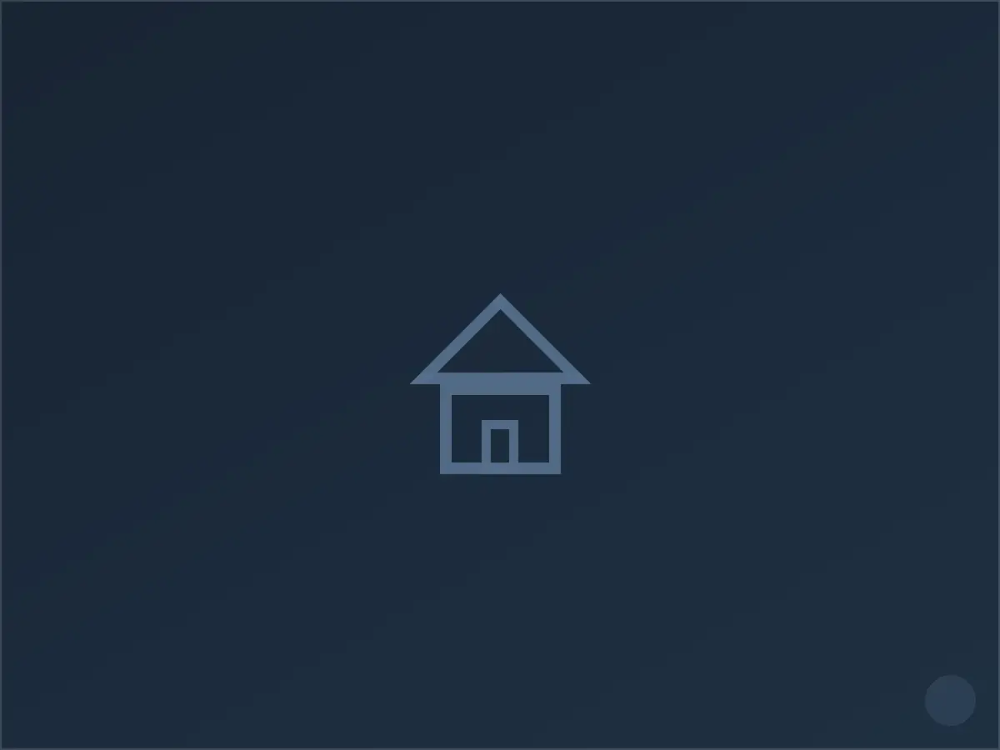

كهربائي في حي العليا، الرياض
العليا ليس حياً سكنياً عادياً؛ فهو مزيج من أبراج مكتبية، ومعارض تجارية، وعمارات سكنية وشقق مفروشة، وهذا التنوع يفرض إيقاع عمل مختلفاً تماماً. عميل في العليا نادراً ما يملك وقتاً فائضاً — موعد المعاينة يجب أن يناسب دوام المكتب، والإصلاح يجب أن يكتمل دون تعطيل استقبال العملاء أو ساعات العمل.
لهذا نُنفّذ في هذا الحي معظم الأعمال إما في الصباح الباكر قبل بدء الدوام أو مساءً بعد إغلاق المحلات، ونحرص على أن يكون فريقنا جاهزاً لتقديم تقرير فني مختصر يمكن تسليمه لإدارة المبنى أو مالك العقار مباشرة، فأغلب طلباتنا هنا تأتي من مدراء عقارات لا من الساكن نفسه.
خدماتنا الكهربائية في العليا
نقدّم في حي العليا كامل الأعمال الكهربائية المنزلية: نُصلح الأعطال الطارئة، نُنفّذ الصيانة الدورية للوحات التوزيع، ونُنجز التمديدات الجديدة والتوسعات بما يشمل تمديد الأسلاك، تركيب المفاتيح والمقابس، وتأهيل نقاط التأريض. نغطي أيضاً تركيب الإنارة الداخلية والخارجية وربط الدوائر بأجهزة التكييف والمطابخ الكهربائية.
خصوصية حي العليا — ما نلاحظه في هذا الحي تحديداً
أنواع المباني الشائعة:
- أبراج مكتبية وتجارية متعددة الطوابق بلوحات توزيع مركزية معقدة
- عمارات سكنية واستثمارية حديثة نسبياً بأنظمة كهرباء ذكية جزئياً
- محلات ومعارض تجارية بأحمال إنارة وتبريد عالية

لماذا يختارنا سكان العليا
استجابة سريعة
نصل عادة خلال ٤٥-٦٠ دقيقة من البلاغ، ولدينا فريق مخصص لتغطية النسيم والأحياء المحيطة به.
خبرة بطراز الحي
نوفر تقرير فحص مكتوب يصلح للتقديم لإدارة المبنى أو الملاك، وهو أمر يطلبه كثير من عملائنا التجاريين في العليا تحديداً.
ضمان مكتوب
كل عمل تمديد أو إصلاح يصدر له ضمان مكتوب يغطي القطع والتنفيذ لمدة تصل إلى سنتين.
خطوات العمل
التواصل
اتصال أو رسالة واتساب، نطلب وصفاً مختصراً للعطل لتجهيز الفني والأدوات المناسبة قبل التحرك.
المعاينة
فحص ميداني دقيق للوحة والدائرة المتأثرة، وتوضيح السبب والتكلفة قبل البدء بأي تنفيذ.
التنفيذ
إصلاح أو تمديد وفق ما تم الاتفاق عليه، مع اختبار الدائرة بعد الانتهاء وتسليم ضمان مكتوب.
أسئلة شائعة من سكان العليا
هل تعملون خارج أوقات الدوام الرسمي؟
نعم، هذا هو الوضع الطبيعي لأغلب أعمالنا في العليا — نرتب موعداً صباحياً مبكراً أو مسائياً حسب طبيعة النشاط لتفادي أي تعطيل.
هل يمكن إصدار تقرير فحص كهربائي لمحل تجاري؟
نعم، نصدر تقرير فحص مبسطاً يوثّق حالة اللوحة والتمديدات، ويمكن الاستعانة به عند التجديد أو التفتيش.
عطل في مكتبي أثّر على مكتب مجاور، كيف تتعاملون معه؟
نفحص لوحة التوزيع المشتركة أولاً لتحديد مصدر العطل بدقة، ونعزل الدائرة المتأثرة فقط دون الحاجة لقطع الكهرباء عن باقي الوحدات إن أمكن.